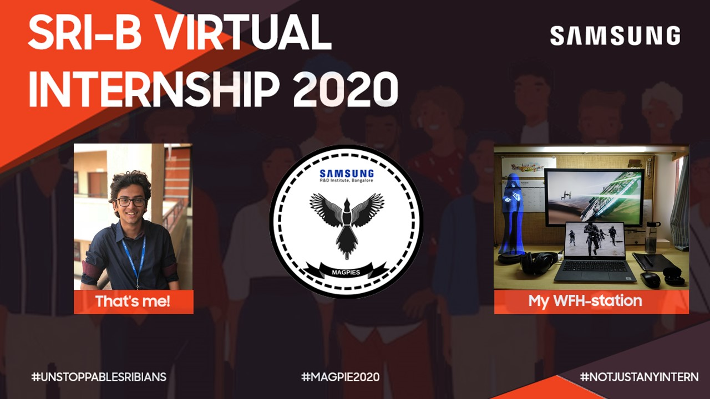

Since March 2020, we've been spending most of our time in our houses due to the outbreak of the coronavirus disease. After a lot of uncertainty, it was a relief when Samsung Research & Development Institute, Bangalore (SRIB) announced that they would convert our internship to a completely virtual one. Something is better than nothing, right? Here is my entire experience as I recollect it.
The Selection Process
SRIB visits PES University, Ring Road Campus in January and recruits approximately ten students to intern with them over June and July of the same year. Since the number of companies visiting campus for recruitments of summer interns is low and Samsung is undoubtedly well established, this internship is coveted. However, I tackled each first round with similar preparation. I consider myself to be proficient in data structures and algorithms however I had subscribed to the "Daily Coding Problem" to ensure I stay on top of my game. It is a service that deposits an interesting interview question every morning to your inbox. I would take the day and solve the problem during my classes. Apart from this, I did very little as preparation. The first round for most internship placements is a coding round and SRIB was no different. However, we were not given the option of coding in Python. A day before the test, I ensured to solve some problems on CodeChef using C++. There were three coding questions which we were expected to compete in an hour. Basic algorithmic thinking was tested and I would rate these questions as easy. I was given questions which tested my knowledge in topics like searching, binary trees and counting. The results were announced the same day and the interviews were scheduled for the very next day. About 40 other deserving students were shortlisted alongside me. I casually flipped through "Introduction to Algorithms" by CLRS the night before and ensured I got sufficient rest. The next day, we were split into groups of five and had a written coding round as our first round. I was asked to implement Heap Sort in C++. Rather straightforward. Following this written round, we were asked to explain our written code to a person from their recruitments team. If our performance was satisfactory, we would advance to the next round which was a resume and technical round. I was asked about my project at the Indian Institute of Science (IISc), some of the other projects I had listed on my resume, my long term goals and a few big data and data structures questions which were basic. This concluded all the rounds of the interview and the results were announced the same night.
The Internship
The pandemic and subsequent lockdowns hit before we started our internship and it was disheartening. We all looked forward to spending two months working at their office located in Marathahalli, Bangalore to gain the full corporate internship experience. However, we were still grateful that it was converted to a virtual one. We were allowed to choose the area we would like to work in and I picked On-Device Artificial Intelligence amongst others such as Visual Intelligence, Voice Intelligence, IoT, Network Modem etc. This area most closely aligned with my research interests. I was assigned a reporting manager and the entire (virtual) onboarding process was seamless. Within the first week, we were given details about the work we would be completing in the next two months and how it fits into their roadmap. I can confidently say that the work I completed there was put to good use. Moreover, the specific areas in which we conducted research and development were extremely intriguing. There were weekly sync ups with our reporting managers to help us keep on track. At the end of two months, we had a final presentation where we discussed our findings and demonstrated our work. It was a pleasure working with my reporting manager and my team that comprised of two other interns. I learnt plenty in my chosen area and noted the differences in academic and corporate research.
What next?
Placements had begun at my university and SRIB had still not decided if they would go ahead and process our pre-placement offers. They said that an advanced qualification test must be administered on their campus (only) before they can conduct interviews and offer full-time employment. We were offered online mock tests of the same. None of us understood why this test couldn't be conducted online with appropriate proctoring and human resources made no attempts to clarify the same. I had no hopes pinned on them conducting the process virtually and I sat for all the interviews I was offered by the companies that visited campus. After being placed at Commvault in September, they sent us communication that stated their regret in not being able to further process our candidature. That did not surprise me but there was something else that did. Shockingly, in October, they sent an email to our fellow interns from the Indian Institutes of Technology (IITs) saying they would be resuming the full-time employment process for them! No such treatment was extended to the interns from the "third-tier" universities. How difficult would it have been to conduct a few more online assessments? Unfortunate to see that SRIB, like a lot of other big names in this industry, run after a brand name instead of real quality. I am positive SRIB lost out on a lot of fine interns who would have added immense value to their teams. However, my overall experience at SRIB was positive and constructive.
 A bit of engagement by the HR team. I'm a huge Star Wars fan. Can you tell?